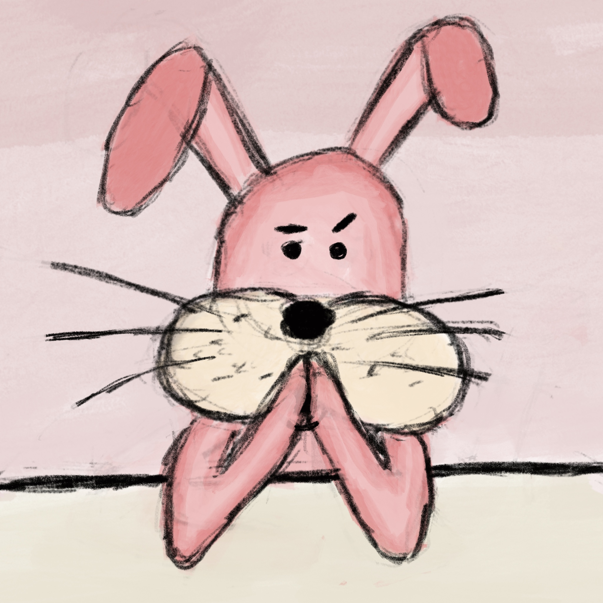
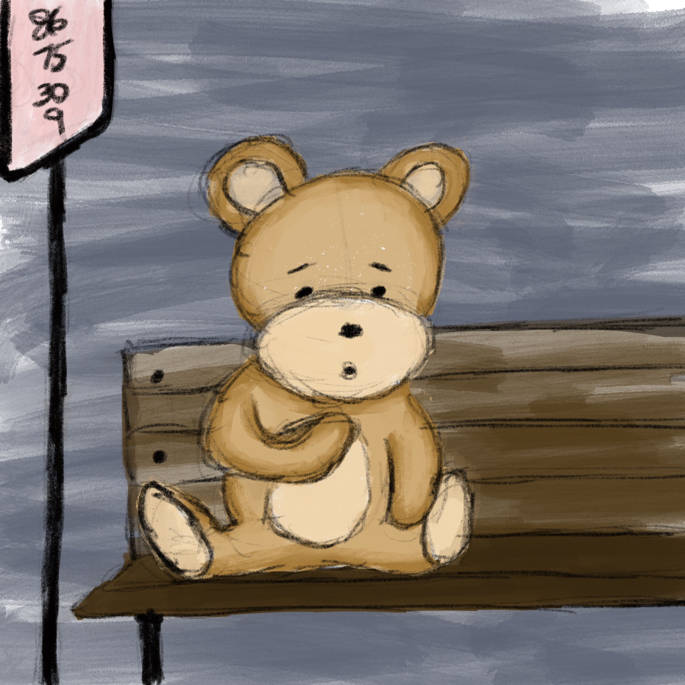
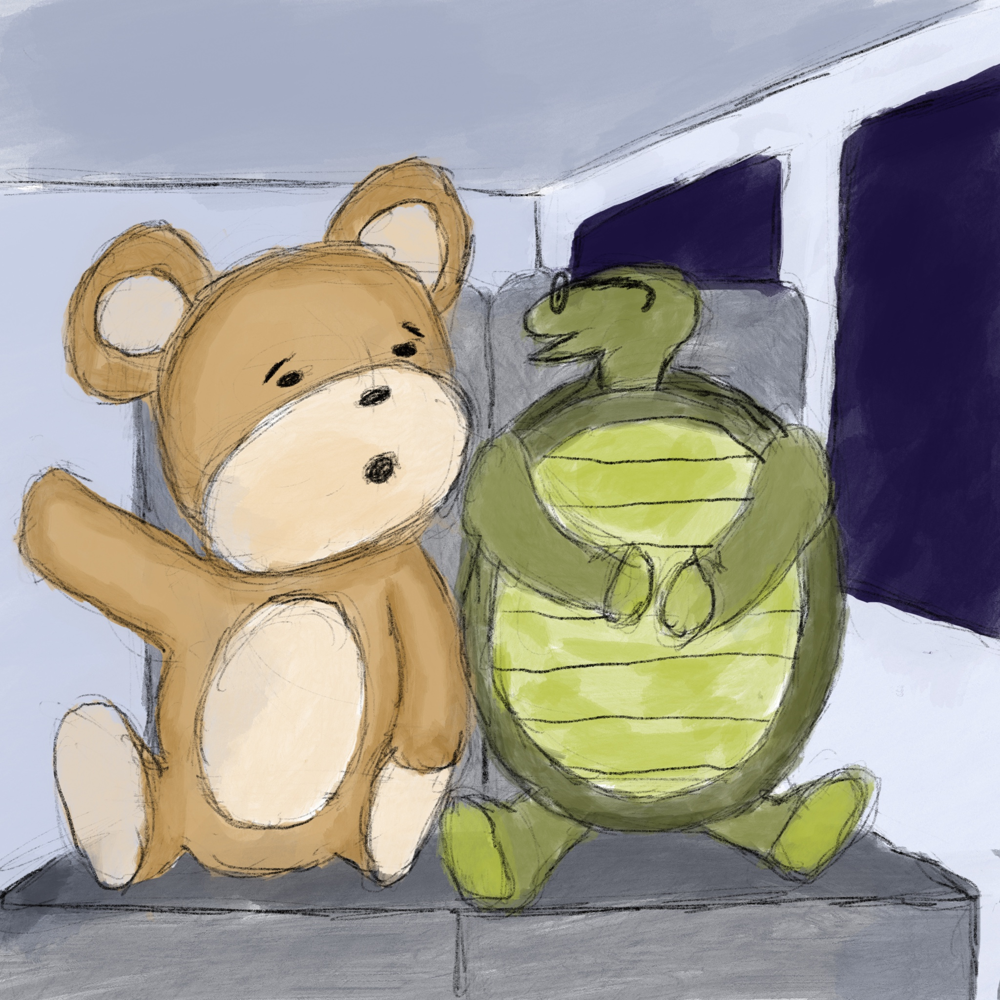

“Have patience, bear,” the rabbit said gently, as the stars faded and the lights came back on. “You have found this place, so you have already begun. Keep letting the journey take you where you must go; do not try to force an ending where one does not exist.” #16

The bear left the pink house and made his way to the bus stop, sat down and stared at his paw. “There *is* something wrong with my heart, and I still don’t know what it is, and now the rabbit tells me it’s trying to teach me something, and I don’t know what that is either. I’m so confused!” #17

The bus was quite full, so the bear took a seat next to an old tortoise. “Mr. bear, do you know where this is going?” He asked. “Well, I wish I knew!” The bear cried out. “Something is wrong with my heart and there’s a gap in my heart line and I feel so out of sorts…” #18